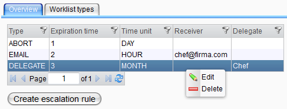
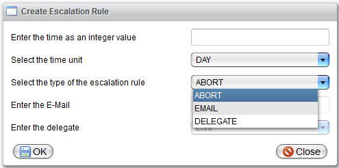
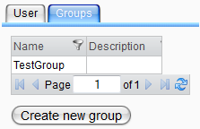

Work List Handler

Topic content
If you don't know anything about the work list server, read the introduction in Work List Server first.
For managing the work list handler, there are several pages in the Orchestra monitor:
Menu for the work list server
Escalation Rules
If you select the "Escalation Rules" menu entry, a table with all currently existing escalation rules is displayed as the following picture shows.

Table with escalation rules
Right clicking a table row opens the context menu. You can edit or delete an item by selecting the corresponding menu entry. It is also possible to add an escalation rule to a work list type. Click the last menu entry for that and select the type you want in the dialog that opens then. Registering a rule for a type means that if a item of that type is not completed after the configured time, the action that corresponds to the escalation rule will be executed.
If you want to create a new rule, click on the create button. The dialog from the picture above will be displayed then.

Escalation rule creation dialog
Depending on the type you select for the rule you can choose a delegate or a E-Mail address or nothing.
If you want to see the escalation rules together with their registered types, click on the "Worklist Types" tab. Here all escalation rules are shown with the types they are registered for, so they can appear more than once. If you are interested in only one type, use the filter option of the table. The shown table has also a context menu with the options "edit" and "delete". Deleting an escalation rule here means that it is unregistered for the type. It is still available for all the other types that reference it and for future references. On the contrary, editing a rule here takes effect for all other types as well. So be careful.

Table with escalation rules for one type
Handling Permissions
A click on the "Handling permissions" menu entry opens a page with a table of all currently existing handling permissions.
Table with all existing permissions
The table has also a context menu that offers the possibility to delete or edit the selected handling permission. A click on the create button opens the dialog above:
Dialog for creating a new handling permission
It is important to know here that for a combination of work list type and credential only one permission can exist. So if permissions for all combinations are already existing, no more can be created. If this happens, a short info dialog will appear if "create" is clicked. Another useful information is that for one credential the permissions need the same mode. It is either possible to define all types that the credential is allowed to handle (include mode) or all types that the credential is not allowed to handle (exclude mode). A mixture is not allowed. For that case, if one permission is already existing, the dialog selects the correct mode and does not allow to change that. If you select a credential that has already handling permissions existing for all types, no more permissions can be created as well. In that case a info dialog shows up.
Now, if a process wants to create a work list item for a credential that is according to the permissions not allowed to, an exception is thrown before the item is added to the work list server. If a type is a start type, only the credentials with the necessary permission are allowed to start it.
Worklist Items
Selecting the "Worklist items" menu entry opens a page with a table of all currently not finished work list entries of all credentials.
Table with all work list items
The table has a context menu with the options "delegate" and "abort". Selecting abort means that the work list item is finished on failure with the error description "Administrator aborted item". By selecting the delegate option, a new dialog opens as in the following picture.
Dialog for delegation
You can select the new credential that should work on the item now there and click on save to finish the delegation. If you want to complete an item by yourself, just pick your user name here.
Worklist User
The work list user page is nearly the same as the page for the monitor users from the topics Create a user and Edit User - assign access rights.

Page for credential management
The table shows all existing users. Double clicking a user opens the edit dialog, clicking the create button opens the creation dialog. Consider the referenced topics for more information here. The only difference is that not all options are available for work list users. If you need a new group of users, click on the create new group button and enter name and description of the group. It is now available in the "Groups" section of the edit dialog.
The second table is for managing the groups, the context menu allows editing and deleting of groups.
See also